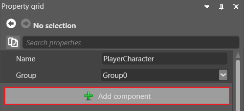

Unity® 開発者のための Stride
Stride と Unity® はどちらも C# を使用し、多くの概念を共有していますが、いくつか大きな違いがあります。
エディター
Stride のエディターは Game Studio です。これは Unity® Editor と同等のものです。
Unity3D シーンからの Web サービスの呼び出しから取得された Unity® のスクリーンショット (Kean Walmsley 氏提供)。
Visual Studio と同様に、Game Studio のレイアウトはタブをドラッグすることによってカスタマイズできます。
Game Studio の詳細については、「Game Studio」ページを参照してください。
用語
Unity® と Stride ではほぼ共通の用語が使用されていますが、いくつか違いがあります。
| Unity® | Stride |
|---|---|
| Hierarchy panel | エンティティ ツリー |
| Inspector | Property grid |
| Project browser | Asset view |
| Scene view | シーン エディター |
| GameObject | エンティティ |
| MonoBehaviour | SyncScript、AsyncScript、StartupScript |
フォルダーとファイル
Unity® と同様に、Stride プロジェクトは以下を含むディレクトリに格納されます。
プロジェクトの
.slnソリューション ファイル。Game Studio または Visual Studio などの任意の IDE で開くことができます。プロジェクトのソース ファイル、依存関係、リソース、構成、バイナリを含む［MyGame.Game］フォルダー。

*［Assets］には、ゲーム内の要素を表すアセット ファイルが含まれます。
*［Bin］には、コンパイル済みのバイナリとデータが含まれます。プロジェクトをビルドすると、プラットフォームごとのサブディレクトリ含むフォルダーが作成されます。
*［MyGame.Game］には、ソース コードが含まれます。
- ［MyGame.Platform］には、プロジェクトがサポートするプラットフォーム用の追加コードが含まれます。プラットフォームごとにフォルダーが作成されます (［MyGame.Windows］、［MyGame.Linux］など)。通常、これらのフォルダーは小さく、プログラムのエントリ ポイントだけが含まれます。
*［obj］には、キャッシュされたファイルが含まれます。このフォルダーは、プロジェクトをビルドすると作成されます。アセットとコードの完全なリビルドを強制的に行うには、このフォルダーを削除して、プロジェクトを再度ビルドします。
*［Resources］は、アセットによって使用される画像ファイルやオーディオ ファイルなどのファイルに推奨される場所です。
Stride と Unity® は次の点が異なります。
Stride では、リソース ファイルをアセットにインポートしても、リソース ファイルはプロジェクト フォルダーに自動的にコピーされません。手動で行う必要があります。リソース ファイルは［Resources］フォルダーに保存することをお勧めします。
Stride では、リソース ファイルとアセット ファイルが同じフォルダーに存在する必要はありません。必要であればリソース ファイルを［Assets］フォルダーに保存できますが、［Resources］フォルダーに保存することをお勧めします。このようにすれば、バージョン管理によるプロジェクトの共有が容易になります。
Stride でのプロジェクトの構造およびファイルの編成と共有の方法に関するアドバイスについては、「プロジェクトの構造」ページを参照してください。
Game Studio からプロジェクト ディレクトリを開く
Game Studio の［Project］>［Show in Explorer］からプロジェクト ディレクトリを開くことができます。

ゲームの設定
Unity® では、グローバルな設定が個別のアセットに保存されます (グラフィックスの設定、品質の設定、オーディオ マネージャーなど)。
Stride では、グローバルな設定は 1 つのアセット (［Game Settings］アセット) に保存されます。以下の情報を構成できます。
- 既定のシーン
- レンダリングの設定
- エディターの設定
- テクスチャの設定
- 物理特性の設定
- オーバーライド
Game Settings アセットを使用するには、［Asset view］で［Game Settings］を選択し、［Property grid］でプロパティを表示します。

シーン
Unity® と同様に、Stride ではすべてのオブジェクトをシーンに配置します。シーンは、独立した .sdscene アセットとしてプロジェクト ディレクトリに格納されます。
既定のシーンを設定する
プロジェクトには複数のシーンを作成できます。実行時には既定のシーンがロードされます。
既定のシーンを設定するには:
［Game Settings］のプロパティで、［Default Scene］の隣の
 (［Select an asset］) をクリックします。
(［Select an asset］) をクリックします。
［Select an asset］ウィンドウが開きます。
既定のシーンを選択し、［OK］をクリックします。
シーンの詳細については、「シーン」を参照してください。
エンティティと GameObject
Unity® では、シーン内のオブジェクトは GameObject と呼ばれます。Stride ではエンティティと呼びます。
GameObject と同様に、エンティティには変換コンポーネント、モデル コンポーネント、オーディオ コンポーネントなどのコンポーネントが格納されます。Unity® の GameObject を使い慣れている場合、Game Studio のエンティティも問題なく使用できるはずです。
エンティティのコンポーネント
Unity® で GameObject にコンポーネントを追加するのと同じように、Stride ではエンティティにコンポーネントを追加します。
Game Studio でコンポーネントをエンティティに追加するには:
コンポーネントを追加するエンティティを選択します。
［Property grid］(既定では右側) で［Add component］をクリックし、ドロップダウン リストからコンポーネントを選択します。

Transform コンポーネント
Unity® の GameObject と同じように、Stride の各エンティティにはワールドでの位置、回転、拡大縮小を設定する Transform コンポーネントがあります。

シーン内のすべてのエンティティは位置を持つ必要があるため、空のエンティティにも Transform コンポーネントがあります。
アセット
Unity® では、［Project browser］でアセットを選択し、［Inspector］タブでプロパティを編集します。
Stride も同様です。［Asset view］でアセットを選択し、［Property grid］でプロパティを編集します。
特定の種類のアセットには、専用のエディターがあります。
- プレハブ
- シーン
- スプライト シート
- UI ページ
- UI ライブラリ
- スクリプト
これらの種類のアセットの専用エディターを開くには、次のいずれかの方法を使用します。
- アセットをダブルクリックします
- アセットを右クリックして、［Edit asset］を選択します
- アセットを選択して、Ctrl + Enter キーを押します
新しいタブでエディターが開きます。自由にタブを配置することも、Web ブラウザーのタブのように別のウィンドウにすることもできます。
Note
Game Studio の外部でリソース ファイルを変更すると、Game Studio で対応するリソースが自動的に更新されます。
アセットをインポートする
アセットをインポートするには、エクスプローラーから［Asset view］にドラッグします。または、［Add asset］ボタンをクリックし、目的のファイルに移動して、インポートするアセットの種類を指定することもできます。
プロジェクトにアセットを追加するとすぐに、［Property grid］でプロパティを編集できます。
Note
Unity® とは異なり、Stride ではリソース ファイルをプロジェクトにインポートしても、リソース ファイルはプロジェクト ディレクトリに自動的にコピーされません。
サポートされるファイル形式
Unity® と同様に、Stride では次のファイル形式がサポートされています。
| アセットの種類 | サポートされる形式 |
|---|---|
| モデル、アニメーション、スケルトン | .dae、.3ds、.obj、.blend、.x、.md2、.md3、.dxf、.fbx |
| スプライト、テクスチャ、スカイボックス | .dds、.jpg、.jpeg、.png、.gif、.bmp、.tga、.psd、.tif、.tiff |
| オーディオ | .wav、.mp3、.ogg、.aac、.aiff、.flac、.m4a、.wma、.mpc |
| フォント | .ttf、.otf |
アセットの詳細については、「アセット」を参照してください。
Note
- 現在、Stride は動画ファイルをサポートしていません。
プレハブ
Unity® と同様に、Stride ではプレハブが使用されます。プレハブとはオブジェクトの「マスター」バージョンであり、必要な場所で再利用できます。プレハブを変更すると、そのプレハブのすべてのインスタンスも変わります。
Unity® とは異なり、Stride ではプレハブを他のプレハブに追加することもできます。これは入れ子になったプレハブと呼ばれます。入れ子になったプレハブを変更した場合、すべての依存するプレハブが変更を自動的に継承します。
たとえば、加速、ブレーキ、ステアリングなどを持つ［Vehicle］プレハブを作成しているものとします。［Vehicle］プレハブを、タクシー、バス、トラックなどの異なる種類の自動車のプレハブに入れ子にできます。［Vehicle］プレハブでプロパティを調整すると、他のすべてのプレハブに変更が継承されます。たとえば、［Vehicle］プレハブで加速プロパティを大きくすると、タクシー、バス、トラックの加速プロパティも大きくなります。
Unity® でこれを行うには、自動車の種類ごとに異なるプレハブを作成し、加速パラメーターを 1 つずつ変更する必要があります。
Stride でのプレハブの使用の詳細については、「プレハブ」を参照してください。
アーキタイプ
アーキタイプとは、それから派生するアセットのプロパティを制御するマスター アセットです。派生アセットは、アセットの「リミックス」バージョンを作成するときに便利です。これはプレハブと似ています。
たとえば、［Metal］という名前のマテリアル アセットを共有する 3 つの球体エンティティがあるものとします。次に、1 つの球体だけの色を変更し、他のプロパティは同じままにしたいものとします。その場合は、マテリアル アセットを複製し、その色を変更して、新しいアセットを 1 つの球体だけに適用することで実現できます。しかし、後ですべての球体の別のプロパティを変更しようとすると、両方のアセットを変更する必要があります。これでは時間がかかり、間違うおそれもあります。
もっとよい方法は、アーキタイプから新しいアセットを派生することです。派生アセットはアーキタイプからプロパティを継承し、必要に応じて個別のプロパティをオーバーライドできます。たとえば、球体のマテリアル アセットを派生して、その色をオーバーライドできます。その後、アーキタイプの光沢度を変更すると、3 つの球体すべての光沢度が変わります。

アーキタイプからアセットを派生し、さらにその派生アセットから別のアセットを派生することができます。このようにすると、アセットのさまざまなレイヤーを作成して、プロジェクトを整理することができます。
Archetype
Derived asset
Derived asset
アーキタイプの詳細については、「アーキタイプ」を参照してください。
入力
Stride はさまざまな入力をサポートします。以下のコード サンプルでは、Stride と Unity® での入力コードの違いを示します。
Stride での入力の詳細については、「入力」を参照してください。
Unity®
void Update()
{
// Space バーが押された 1 フレームについて true
if(Input.GetKeyDown(KeyCode.Space))
{
// 処理を行う。
}
// このジョイスティック ボタンがダウン状態の間 true
if (Input.GetButton("joystick button 0"))
{
// 処理を行う。
}
float Horiz = Input.GetAxis("Horizontal");
float Vert = Input.GetAxis("Vertical");
// 別の処理を実行する。
}
物理特性
Unity® と同様に、Stride にも 3 種類のコライダーがあります。
- 静的コライダー
- 剛体
- キャラクター
これらのスクリプトでの制御方法は少しずつ異なります。
運動学的剛体
Unity®
public Rigidbody rigidBody;
void Start()
{
rigidBody = GetComponent<Rigidbody>();
}
void EnableRagdoll()
{
rigidBody.isKinematic = false;
rigidBody.detectCollisions = true;
}
void DisableRagdoll()
{
rigidBody.isKinematic = true;
rigidBody.detectCollisions = false;
}
Stride
public class KinematicX : SyncScript
{
public RigidbodyComponent component;
public override void Start()
{
// スクリプトの初期化。
component = Entity.Get<RigidbodyComponent>();
}
public override void Update()
{
}
public void EnableRagdoll()
{
component.IsKinematic = false;
component.ProcessCollisions = true;
}
public void DisableRagdoll()
{
component.IsKinematic = true;
component.ProcessCollisions = false;
}
}
Stride での剛体の詳細については、「剛体」を参照してください。
トリガー
Unity®
// ゲーム オブジェクトがトリガーと衝突したとき。
void OnTriggerEnter(Collider Other)
{
Other.transform.localScale = new Vector3(2.0f, 2.0f, 2.0f);
}
// ゲーム オブジェクトがコライダー空間を出るとき。
void OnTriggerExit(Collider Other)
{
Other.transform.localScale = new Vector3(1.0f, 1.0f, 1.0f);
}
Stride
var trigger = Entity.Get<PhysicsComponent>();
trigger.ProcessCollisions = true;
// 状態マシンを開始する。
while (Game.IsRunning)
{
// 1. エンティティがトリガーと衝突するのを待つ。
var firstCollision = await trigger.NewCollision();
var otherCollider = trigger == firstCollision.ColliderA
? firstCollision.ColliderB
: firstCollision.ColliderA;
otherCollider.Entity.Transform.Scale = new Vector3(2.0f, 2.0f, 2.0f);
// 2. エンティティがトリガーから出るのを待つ。
Collision collision;
do
{
collision = await trigger.CollisionEnded();
}
while (collision != firstCollision);
otherCollider.Entity.Transform.Scale = new Vector3(1.0f, 1.0f, 1.0f);
}
Stride でのトリガーの詳細については、「トリガー」を参照してください。
レイキャスティング
Unity®
Collider FindGOCameraIsLookingAt()
{
int distance = 50;
// レイをキャストし、ゲーム内のマウス カーソルの位置に設定する
Ray ray = Camera.main.ScreenPointToRay(Input.mousePosition);
RaycastHit hit;
if (Physics.Raycast(ray, out hit, distance))
{
// 見えないレイ キャスト/ベクトルを描画する
Debug.DrawLine(ray.origin, hit.point);
// ヒット領域をコンソールに記録する
Debug.Log(hit.point);
return hit.collider;
}
return null;
}
Stride
public static PhysicsComponent ScreenPositionToWorldPositionRaycast(Vector2 screenPos, CameraComponent camera, Simulation simulation)
{
Matrix invViewProj = Matrix.Invert(camera.ViewProjectionMatrix);
Vector3 sPos;
sPos.X = screenPos.X * 2f - 1f;
sPos.Y = 1f - screenPos.Y * 2f;
sPos.Z = 0f;
var vectorNear = Vector3.Transform(sPos, invViewProj);
vectorNear /= vectorNear.W;
sPos.Z = 1f;
var vectorFar = Vector3.Transform(sPos, invViewProj);
vectorFar /= vectorFar.W;
var result = simulation.Raycast(vectorNear.XYZ(), vectorFar.XYZ());
return result.Succeeded;
}
Stride でのレイキャスティングの詳細については、「レイキャスティング」を参照してください。
スクリプト
Stride では、スクリプトはプロジェクト ディレクトリの［MyGame.Game］フォルダーのサブフォルダーに保存されます。
Game Studio のスクリプト エディターでスクリプトを開くには、［Asset view］でスクリプトをダブルクリックします。スクリプト エディターには、構文の強調表示、オートコンプリート、ライブ診断の機能があります。
Visual Studio などの他の IDE でスクリプトを編集することもできます。外部 IDE でスクリプトを編集すると、自動的に再ロードされます。
Stride をインストールするときに Visual Studio プラグインをインストールすると、Game Studio からプロジェクトを Visual Studio で開くことができます。そのためには、Game Studio ツールバーで［Open in IDE］をクリックします。

または、［Asset view］でスクリプトを右クリックし、［Open asset file］をクリックします。

イベント関数 (Start、Update、Execute など)
Unity® では、Start()、Update()、その他のメソッドで MonoBehaviour を操作します。
MonoBehaviour の代わりに、Stride には SyncScript、AsyncScript、StartupScript の 3 種類のスクリプトがあります。詳細については、「スクリプトの種類」を参照してください。
Unity® の MonoBehaviour
public class BasicMethods : MonoBehaviour
{
void Start() { }
void OnDestroy() { }
void Update() { }
}
Stride の SyncScript
public class BasicMethods : SyncScript
{
public override void Start() { }
public override void Cancel() { }
public override void Update() { }
}
Stride の AsyncScript
public class BasicMethods : AsyncScript
{
// Game Studio に表示される、宣言されたパブリック メンバー フィールドとプロパティ
public override async Task Execute()
{
while(Game.IsRunning)
{
// 新しいフレームのたびに処理を行う
await Script.NextFrame();
}
}
public override void Cancel()
{
// スクリプトのクリーンアップ
}
}
Stride の StartupScript
public class BasicMethods : StartupScript
{
// Game Studio に表示される、宣言されたパブリック メンバー フィールドとプロパティ
public override void Start()
{
// スクリプトの初期化
}
public override void Cancel()
{
// スクリプトのクリーンアップ
}
}
スクリプト コンポーネント
Unity® と同様に、Stride では、スクリプト コンポーネントとして追加することによってスクリプトをエンティティにアタッチします。
スクリプトを作成する
スクリプトを作成するには、［Add asset］ボタンをクリックして、［Scripts］を選択します。

Unity® では、MonoBehaviour スクリプトを作成すると、2 つの基底関数 Start() と Update() が作成されます。Stride の SyncScript は同じように動作します。MonoBehaviour と同様に、SyncScript には次の 2 つのメソッドがあります。
MonoBehaviour とは異なる、すべての SyncScript で Update() メソッドを使用する必要があります。そうしないと、コードは正しく動作しません。
スクリプトをスタートアップ スクリプトまたは非同期スクリプトにしたい場合は、対応するスクリプトの種類を使用します。
StartupScript: このスクリプトのメソッドは Start() の 1 つだけです。起動時にシーンとその内容を初期化します。
AsyncScript: 非同期スクリプトのメソッドは Execute() の 1 つだけで、そのメソッド内で非同期/待機を使用できます。非同期スクリプトは、同期スクリプトのように 1 つずつロードされることはありません。すべてのスクリプトが並列にロードされます。
アセンブリを再ロードする
Unity® とは異なり、スクリプトを作成した後は、アセンブリを手動で再ロードする必要があります。そのためには、Game Studio のツールバーで［Reload game assemblies］をクリックします。

スクリプトをエンティティに追加する
エンティティ ツリー (既定では左側) またはシーンで、スクリプトを追加するエンティティを選択します。
［Property grid］(既定では右側) で、［Add component］をクリックし、追加するスクリプトを選択します。

Unity® では、スクリプト コンポーネントは［Components］>［Scripts］の下にグループ化されています。Stride では、スクリプトはグループ化されません。Game Studio では、他のコンポーネントと一緒にアルファベット順に一覧表示されます。
Stride でのスクリプトの追加の詳細については、「スクリプトを使用する」を参照してください。
ゲームプレイのスクリプト化
Unity® と Stride はどちらも C# を使用します。ただし、Stride でのゲームプレイのスクリプト化は Unity® と少し異なります。
エンティティ/GameObject をインスタンス化する
Unity® では、Instantiate を使用して新しいオブジェクト インスタンスを作成します。この関数は、UnityEngine.Object をコピーし、それをシーンに対して生成します。
Unity®
public GameObject CarPrefab;
public Vector3 SpawnPosition;
public Quaternion SpawnRotation;
void Start()
{
GameObject NewGO = (GameObject)Instantiate(CarPrefab, SpawnPosition, SpawnRotation);
NewGO.name = "NewGameObject1";
}
Stride
Stride では、Unity® の GameObject と同じようにエンティティをインスタンス化できます。
// Game Studio のプロパティ グリッドに表示される、宣言されたパブリック メンバー フィールドとプロパティ。
public Prefab CarPrefab;
public Vector3 SpawnPosition;
public Quaternion SpawnRotation;
public override void Start()
{
// スクリプトの初期化。
var car = CarPrefab.Instantiate();
SceneSystem.SceneInstance.RootScene.Entities.AddRange(car);
car.First().Transform.Position = SpawnPosition;
car.First().Transform.Rotation = SpawnRotation;
car.First().Name = "MyNewEntity";
}
既定値を使用する
Unity® の各クラスには特定の既定値があります。スクリプトでこれらのプロパティをオーバーライドしないと、既定値が使用されます。これは Stride でも同じです。
Unity®
public int NewProp = 30;
public Light MyLightComp = null;
void Start()
{
// まだない場合はライト コンポーネントを作成する。
if (MyLightComp == null)
{
MyLightComp = gameObject.AddComponent<Light>();
MyLightComp.intensity = 3;
}
}
Stride
// Game Studio のプロパティ グリッドに表示される、宣言されたパブリック メンバー フィールドとプロパティ。
public int NewProp = 30;
public LightComponent MyLightComponent = null;
public override void Start()
{
// まだない場合はライト コンポーネントを作成する。
if (MyLightComponent == null)
{
MyLightComponent = new LightComponent();
MyLightComponent.Intensity = 3;
Entity.Add(MyLightComponent);
}
}
GameObject/エンティティを無効にする
Unity®
MyGameObject.SetActive(false);
Stride
Entity.EnableAll(false, true);
GameObject/エンティティからコンポーネントにアクセスする
Unity®
Light lightComponent = GetComponent<Light>();
Stride
LightComponent lightComponent = Entity.Get<LightComponent>();
コンポーネントから GameObject/エンティティにアクセスする
Unity®
GameObject ParentGO = lightComponent.gameObject;
Stride
Entity ParentEntity = lightComponent.Entity;
出力を記録する
出力を表示するには、Game Studio のツールバーで、［View］の［Output］を有効にします。

Game Studio は、［Output］タブ (既定では Game Studio の下部) に表示します。

デバッグ メッセージを表示する
Visual Studio の出力を表示するには、次のようにします。
System.Diagnostics.Debug.WriteLine("hello");
Note
デバッグ メッセージを表示するには、Game Studio ではなく Visual Studio からゲームを実行する必要があります。Game Studio の出力ウィンドウに表示する方法はありません。
Unity® は、Unity Technologies の商標です。